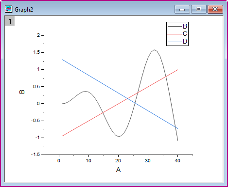
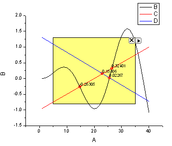

曲線の交差ガジェット
CurveIntersection-Gadget
サマリー
グラフレイヤに複数の曲線がある場合、これらの曲線の交点を計算したい場合があります。Origin 8.6から、交差ガジェットを使用して、グラフ上の入力曲線の交点を計算できます。
必要なOriginのバージョン:Origin 8.6 SR0
学習する項目
このチュートリアルでは、以下の項目について解説します。
- グラフ上で交差ガジェットを使用
- 交点にタグを付ける
- ワークシートに交点を出力
ステップ
このチュートリアルは、チュートリアルデータプロジェクト（<Origin EXE フォルダ>\Samples\TutorialData.opj）と関連しています。
- TutorialData.opj を開き、プロジェクトエクスプローラでCurve Intersection Gadget フォルダを開きます。
- ワークブックBook6BでA～D列を選択して、作図 > 基本の2Dグラフ: 折れ線を選択して折れ線グラフを作図します。
- 
- メインメニューからガジェット：交差を選択し、ダイアログボックスを開きます。オプションタブを開きます。
- オプションタブから交点のラベルのチェックを付け、サイズを15、タイプをY、回転（度）を0とします。
- OK ボタンをクリックして、グラフウィンドウに戻ります。黄色のROIボックスが追加されます。
- 
- ROIボックスの右上にある矢印ボタン
 をクリックし、コンテキストメニューからプロット群の最大範囲に拡大するを選びます。下図のように、ROIボックスが拡張され、プロット範囲を覆います。
をクリックし、コンテキストメニューからプロット群の最大範囲に拡大するを選びます。下図のように、ROIボックスが拡張され、プロット範囲を覆います。
- ROIボックスの右上にある矢印 ボタン をクリックします。コンテキストメニューから設定...を選択し、ダイアログボックスを開きます。出力先タブを開き、結果ワークシート名の右側にあるフライアウトボタン
 をクリックして、入力ブック内のシートを選択します。
をクリックして、入力ブック内のシートを選択します。
- OK ボタンをクリックして、グラフウィンドウに戻ります。ROIボックスの右上にある矢印ボタンをクリックし、コンテキストメニューから新しい出力を選びます。
- 結果は、スクリプトウィンドウに出力されます。再び三角形ボタンをクリックして、メニューからレポートシートに行くを選択します。交点のX、Y座標が結果シートに表示されます。